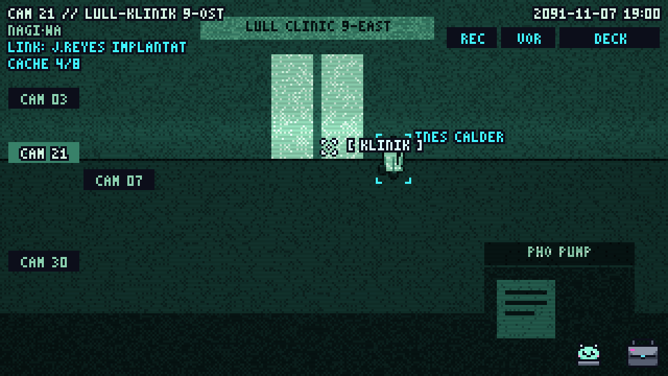
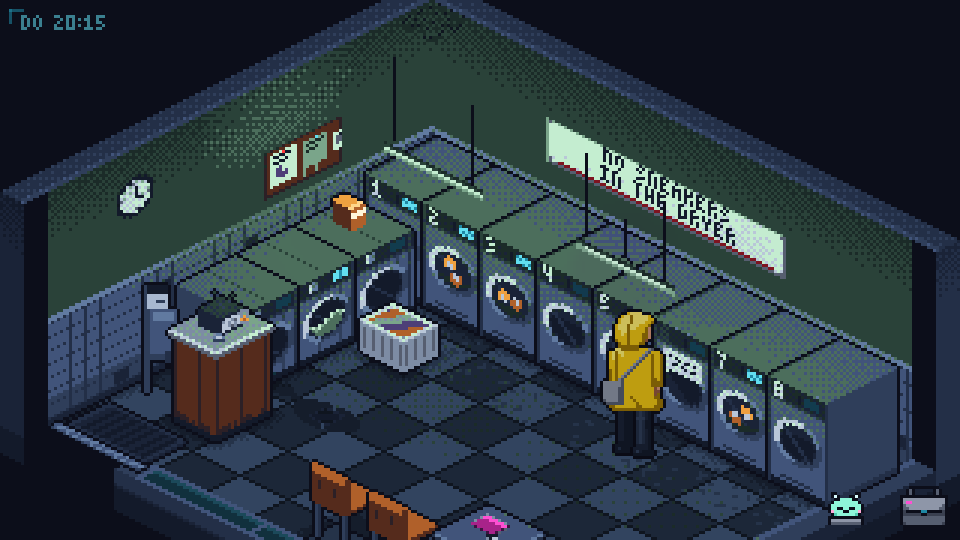
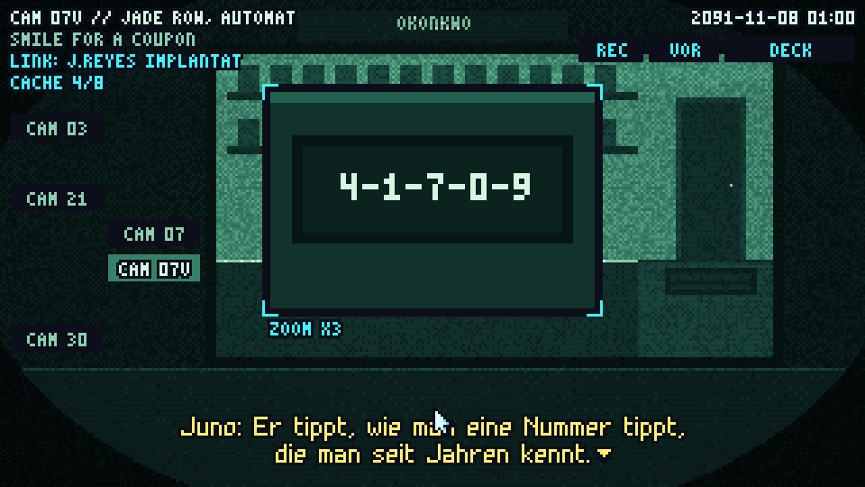
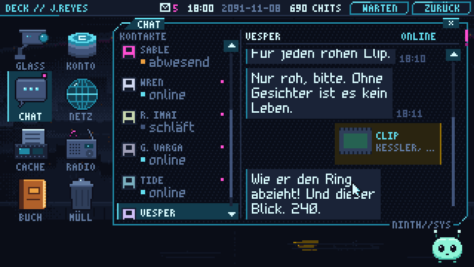
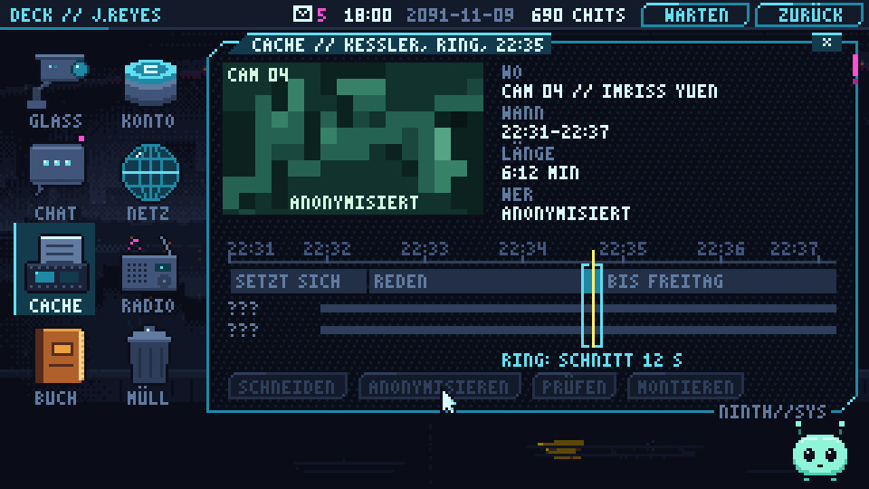
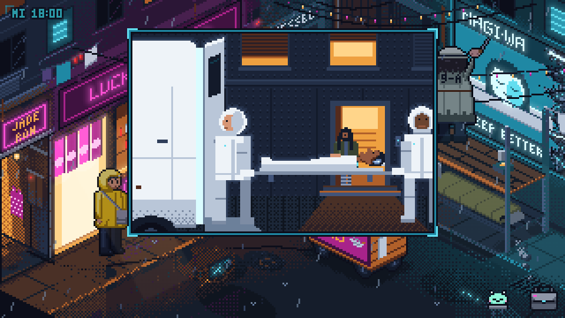

Prolog: Nachtschicht
Ein Weg durch. Der Abend beginnt um 21:30.
index.html öffnen. Esc überspringt das Intro, dann „Neues Spiel“.- Deck anklicken, CHAT, M. KESSLER.Frau Kessler glaubt ihrem Mann die Überstunden nicht und will Beweise. Das Foto zeigt ihn mit hellem Schal.
- GLASS, CAM 03, VOR bis 22:00.Schichtende: Leute kommen aus dem Bürohaus.
- Den Mann mit dem hellen Schal anklicken.Juno markiert Kessler und hört ihn telefonieren: „Halb elf, bei Yuen's.“ Für die Kamera dort hat sie keinen Zugang.
- Die Kamera am Mast rechts oben im Bild anklicken.Auf dem Gehäuse steht der Wartungscode von CAM 04.

Kessler ist markiert, der Zeiger steht auf der Kamera am Mast. - DECK, auf der Karte CAM 04 anklicken, dann noch einmal, um sie zu öffnen.Der erste Klick verbindet die Kamera. EVI freut sich. (Es geht auch ohne das Deck: in CAM 03 links in der Leiste das graue CAM 04.)
- REC drücken, VOR bis 22:30.Kessler gibt einem Mann im grauen Mantel seinen Ehering: „Bis Freitag, Kessler.“ Das ist Gus Varga, ein Kredithai. Juno hat alles aufgenommen.

REC läuft, oben rot. - DECK, CHAT, M. KESSLER, „Den ganzen Clip schicken.“ wählen.200 Chits kommen. EVI fragt, ob Frau Kessler jetzt froh ist. Sable meldet sich und will Informationen kaufen; das ist freiwillig.
- ZURÜCK, den Kühlschrank anklicken.Er ist leer. Juno muss raus.
- Tür, Treppe. Motte fragt, was Juno den ganzen Tag macht: „Ich schau Leuten zu. Und verkauf, was ich sehe.“ wählen.Dann ist sie unten im Hausflur.
- Die Briefkästen anklicken.Eine Mahnung: 900 Chits Miete, fällig in drei Tagen.
- Haustür, Bao anklicken, „Wie immer.“ wählen.Juno nimmt die Brühe mit. Dann stottert der kaputte Werbeschirm, ein Auge im Rauschen sieht sie an, und dort steht JUNO. EVI sagt, es wird spät.

Die Kowalski-Straße, Baos Stand mit dem Schirm. - Haustür, Treppe, die eigene Tür.Oben setzt Juno sich ans Deck und isst. (Wer will, klettert danach noch aus dem Fenster aufs Dach.)
- Das Bett anklicken.„Genug für heute.“ Dann die Karte „Kapitel 1: Glass“ und der Mittwochabend.
Kapitel 1: Glass
Ein Weg durch die Hauptgeschichte.
index.html?act=kapitel1 (beginnt mit den Antworten dieses Wegs: Motte freundlich, Frau Kessler die ganze Wahrheit).Mittwoch 18:00, der erste Abend
- Deck anklicken, dann CHAT und WREN.WREN zahlt dafür, dass Juno herausfindet, wen Dr. Ines Calder trifft und wo. Spur: die Lull-Klinik.
- GLASS öffnen, CAM 21 anklicken, VOR.Um 18:30 klopft es: Teo bringt Brühe von Bao. Hinter seinem Ohr blinkt das Lull-Pflaster, „Seit es gratis ist.“ Danach ist Juno wieder bei CAM 21.

Teo bringt Baos Brühe. - VOR bis 19:00.Ines kommt aus der Klinik.
- Ines anklicken.Juno markiert sie.

Ines markiert. Unten rechts: die Speisekarte im Fenster. - Die Speisekarte im Fenster unten rechts anklicken.Darauf steht das Gäste-WLAN: CAM 22 läuft.
- DECK, dann auf der Karte CAM 23 anklicken.Der Waschsalon hat den Werkscode 0000: CAM 23 läuft.
- WARTEN, bis die Uhr 01:00 zeigt. Dann ZURÜCK und das Bett anklicken.Ab 01:00 geht das Bett. Es wird Donnerstag.
Donnerstag 18:00, der zweite Abend
- Deck, GLASS, CAM 23, VOR bis 20:00.Ines bringt keine Wäsche mit. Sie legt etwas in den kaputten Trockner 6 und geht, aber nicht nach Hause: Richtung Sumpf-Abgang.

Der Trockner mit dem Zettel ist die Sechs. - DECK, CAM 30, einmal VOR bis 20:15.Ines liest die Pegeltafel und sieht auf die Uhr. Juno fragt sich, was sie hier will: Freitag, 23:00 ist Niedrigwasser, unten ist nur die alte Metro. Also trifft sie dort jemanden. Auf der Karte erscheint CAM 31.

Der Sumpf-Abgang mit der Pegeltafel. - DECK, ZURÜCK, dann zu Fuß: Tür, Treppe, Haustür, Gasse, SUDS & SPIN.Die Uhr steht, solange Juno läuft.
- Trockner 6 anklicken, „Zurücklegen.“ wählen.Darin liegt ein Datenstick. Ein Schlüssel ist drauf, wozu, weiß Juno noch nicht. Sie lässt ihn liegen.

Der Waschsalon. Hinter den Türen von 2, 3 und 7 drehen sich Turnschuhe. - Nach Hause: Tür, Kowalski-Straße, Haustür, Treppe, Meine Tür.
- Deck anklicken, WARTEN bis mindestens 01:00, ZURÜCK, Bett.Es wird Freitag.
Freitag 18:00, der letzte Abend
- Deck, CHAT, WREN, „Den Ort senden.“ wählen.Juno verkauft ihre Vermutung: 1250 Chits, jetzt 1700. WREN zahlt 750 extra, wenn sie heute Nacht zusieht. EVI freut sich über das Geld.

Der Ort ist verkauft. - GLASS, CAM 31 anklicken und den Takt eingeben: Lang, Kurz, Kurz, Lang.Kein Code findet diese Kamera, nur das alte Protokoll in Junos Kopf. Im Rauschen steht kurz das Auge, dann: „Sie ist verbunden.“
- WARTEN, bis die Uhr bei 22:45 stehen bleibt.Um 22:30 bucht das Konto die Miete ab: 900 Chits.
- CAM 31 anklicken und die Zeilen weiterklicken.Ines kommt die Treppe herunter, um 23:00 kommt Lantern im Rollstuhl. Sie gibt ihm die Wallet und flüstert: „SUDS & SPIN. Trockner sechs, der kaputte. Sonst weiß es keiner.“ Juno: „Doch. Ich.“ Lantern fährt weg. Im Schatten steht ein weißer Fleck, das Overlay zeigt BEDROHUNG.
- STEUERN, CHAT: INES, LAUTSPRECHER und REVIER 9 anklicken.Nichts davon hilft, und das ist Absicht. Nach etwa 22 Sekunden geht es von selbst weiter, VOR kürzt ab. DECK geht jetzt nicht: „Ich bleib. Ich bleib dran.“

Juno kann nur zusehen. - Nur noch zusehen und Zeilen weiterklicken.Ashe tötet Ines, in der Voreinstellung hinter schwarzen Balken. Er sieht in die Kamera, dann SIGNAL LOST. Danach Junos Wohnung, EVI: „Er hat sie ausgeschaltet.“ Dann geht es von selbst in Kapitel 2 über.
Kapitel 1 · NebenwegAuftrag A: Der verschwundene Schuldner
Mittwochs oder donnerstags, ganz freiwillig. Varga will Kessler finden. Hier: verkaufen.
- Deck, CHAT, G. VARGA.„Kessler ist weg. Finde ihn. 400.“ Annehmen muss man nichts.
- GLASS, CAM 03, VOR bis 22:15, die Kapuze am Nudelautomaten anklicken.Nummer 7, Huhn scharf, und am Finger ein heller Streifen, wo der Ring war. Kessler geht zum Kapselhotel Morpheus: CAM 15 steht auf der Karte, aber ohne Code.
- Zu Fuß zum Drain-Markt: Tür, Treppe, Haustür, Gasse, Drain-Markt. Den Vorhang ganz rechts unten am Südufer anklicken.Erst der Blick die Treppe hinunter (ein Klick überspringt ihn), dann der Markt von oben, größer als der Bildschirm. Hinter dem Vorhang sitzt Sable.
- Sable: „Ich brauch den Code vom Morpheus, CAM 15.“, dann „Hier sind achtzig.“Oder im Tausch gegen die Notiz über Kesslers Schulden.
- Nach Hause, Deck, GLASS, CAM 15, VOR bis 22:30, die Kapuze anklicken.Er kriecht in Kapsel 23. Verpasst: PUFFER.
- DECK, CHAT, G. VARGA, „Kapsel 23 senden.“400 Chits. Die anderen Wege: einen falschen Ort senden, oder Kapsel 23 in CAM 15 anklicken und ihn warnen.
Kapitel 1 · NebenwegAuftrag B: Der Eckladen
Mittwochs oder donnerstags vor 01:00, freiwillig. TIDE will den Tresorcode von Okonkwo. Hier: verkaufen, alles an einem Abend.
- Deck, CHAT, TIDE.„Okonkwo, Jade Row. Wir wollen den Tresorcode. 500. Keine Fragen.“
- Zu Fuß: Tür, Treppe, Haustür, Gasse, Drain-Markt. Ratz anklicken, die Kabelratte auf der Kiste hinter dem Stand mit Elektroschrott (JUNK), rechts unterhalb der Treppe.„Was hast du da?“, „Hast du einen Abzweiger?“, „Hier sind sechzig.“ Der Abzweiger ist in der Tasche.
- Zurück zur Kowalski-Straße und am linken Ende durch in die Jade Row.Links Okonkwos Laden, rechts gegenüber der Automat SMILE FOR A COUPON.

Die Jade Row. Der Automat steht rechts am Bordstein. - Die Tasche öffnen, den Abzweiger anklicken, dann den Automaten.Eine Drohne zieht vorbei, Juno wartet sie ab und zapft an. CAM 07V ist auf dem Deck.
- Nach Hause, Deck, GLASS, CAM 07V, VOR bis 01:00, Okonkwo anklicken.Er tippt an der Kasse, ihr Kundendisplay zeigt jede Taste. Im Zoom: 41709. Verpasst: PUFFER, in derselben Nacht.

Die Automatenkamera sieht auf Augenhöhe, was CAM 07 von oben nicht sieht. - DECK, CHAT, TIDE, „Den Code senden.“500 Chits. Die anderen Wege: einen falschen Code senden (250), oder vor 01:00 in Okonkwos Laden gehen und „Die Tidewater Boys wollen deinen Tresor.“ sagen. Dafür gibt es eine Stange Reis, und das geht auch ganz ohne den Code.
- Nebenbei: CAM 07 um 00:30.Ein Streifenwagen, ein Tidewater-Junge, Lt. Morrow nimmt einen Umschlag: „Freitag fährt keiner die Kowalski.“ Juno kann es aufnehmen.
Kapitel 1 · NebenwegMottes Lektionen
Nur wenn Juno im Prolog freundlich zu Motte war (ohne Prolog ist sie das). Eine Lektion pro Abend.
- Mittwoch: Tür, Motte auf der Bank anklicken, „Was ist eine Kamera?“„Ein Auge, das nichts vergisst.“
- Donnerstag: Motte, „Wie findet man einen Code?“Hat Juno noch keinen Abzweiger, baut er ihr einen aus seinem Tideboy. Damit geht Auftrag B ohne Ratz.
- Freitag: Motte, „Warum glasst man den eigenen Block nicht?“„Jetzt bin ich Glasser.“ Das merkt sich das Spiel für Kapitel 3.
Kapitel 1 · NebenwegVesper
Nie nötig. Ab Donnerstag.
- Donnerstag: Deck, CHAT, VESPEREr zahlt das Doppelte von Sable für jeden rohen Clip. EVI kann Gesichter wegmachen.
- „Kesslers Ring senden.“240 Chits. Morrows Umschlag (300) und die weißen Träger (400) gehen auch, wenn Juno sie aufgenommen hat.

Der Clip ist bei Vesper. - Freitag: BUCH„VESPER: Ring, 31.200 sahen zu“. Und Vesper dankt im Namen der Krone.
- Oder: CACHE, den Clip öffnen, ANONYMISIERENDann sieht niemand mehr ein Gesicht, und Vesper bekommt ihn nicht.

Anonymisiert: das Bild ein Mosaik, die Namen weg.
Kapitel 1 · NebenwegIm LUCKY STATIC
Nichts davon ist nötig. Von Mittwoch an jeden Abend: Kowalski-Straße, die Tür des LUCKY STATIC.
- Mei hinter der ThekeSie lässt Juno anschreiben und erzählt, was man hört; am Donnerstag vom Sohn des Fischmanns, der nicht aufgewacht ist.
- Der Fernseher über der ThekeNagi·was Nachrichten, jeden Abend andere.
- Die üblichen zwei auf den HockernEr schläft, sie erzählt ihm trotzdem was.
- Die Karaoke-MaschineOUT OF ORDER, bis Mei sagt, wo man draufhauen muss. Drei Lieder; an jeder Lücke wählt man ein Wort, und ein falsches Reimwort kommentieren Mei oder die Stammgästin.
- Frau Imai an ihrem TischIhre eigene Geschichte, siehe unten.
Kapitel 1 · NebenwegDas Dach
Nie nötig, an jedem Abend und schon im Prolog. Aufs Dach, wo Juno zuletzt mit Teo war.
- Im Flur neben dem Aufzug den Notschlüssel anklicken.Ein langer Haken. Juno nimmt ihn mit.
- In der Wohnung den Karton anklicken.Darin liegt Junos alter Nagi·wa-Ausweis. Er ist flach und hart, und sie steckt ihn ein.
- Die Tasche öffnen, den Ausweis anklicken, dann das Fenster.Der Riegel geht auf, und Juno steht draußen auf dem Sims.
- Den Notschlüssel auf die Leiter.Die Leiter kommt herunter, und Juno klettert aufs Dach.
- Die Regenleserin anklicken.Sie kostet den Regen und sagt, von welchem Ring er kommt, jeden Abend etwas anderes. Man kann sie alles fragen, und vieles davon zählt erst später.
- Unser Platz, Die Ringe.Eine Erinnerung an Teo, und der Blick nach oben zur Krone.
- Zurück: die Leiter nach unten, dann das Fenster.
Kapitel 1 · NebenwegDer Zeitungskrieg
Mittwochs oder donnerstags. Auf dem Flur streiten 14C und 14A per Zettel, wer die Zeitung klaut.
- Im Flur den Zettel anklicken.WER KLAUT MEINE ZEITUNG?? Darunter: NIEMAND LIEST ZEITUNG.
- Frau Haldanes offene Tür anklicken.Sie schläft im Sessel. Hinter ihr liegt ein Stapel Zeitungen, und um jedes Gesicht darin sind vier kleine Ecken, so, wie Juno markiert.
- Die Kamera über der Treppe anklicken, „Nur dieses eine Mal.“ wählen.Den eigenen Block glasst man nicht. Juno tut es trotzdem: CAM 14 ist auf dem Deck.
- Deck, GLASS, CAM 14, VOR bis 02:30, die Person im Morgenmantel anklicken.Es ist Frau Haldane. Sie schläft und holt sich die Zeitungen, ihre eigene und die von 14A.
- Zurück in den Flur, den Zettel ansehen (Rechtsklick).Jetzt steht Junos Antwort darunter: ES IST NIEMAND. 14B.
Kapitel 1 · NebenwegFrau Imai
Ab Mittwoch. Eine Frau hat im Schlaf einen Mord gesehen, in einer Straße, in der sie nie war.
- Deck, CHAT, R. IMAI.Sie will wissen, ob sie verrückt ist, und sitzt abends im LUCKY STATIC.
- Tür, Treppe, Haustür, das LUCKY STATIC, Frau Imai anklicken.Sie erzählt von einer Treppe mit einem großen Fisch auf den Stufen, von links regnet es, und sie hat von oben draufgeschaut. Juno kennt die Treppe: CAM 18 am alten Fischmarkt.
- Nach Hause, Deck, GLASS, CAM 18, PUFFER.Ältere Nächte liegen im Archiv. Am 29. Oktober um 03:12 fällt einer die Treppe hinunter, genau so, wie sie es gesehen hat. Um die Zeit hat sie geschlafen.
- Zurück ins LUCKY STATIC, Frau Imai: „Sie sind nicht verrückt.“ oder „Das war ein Traum.“Die Wahrheit macht ihr Angst, und sie traut sich nicht mehr zu schlafen. Die Lüge lässt sie schlafen, und EVI weiß, dass es die Treppe gibt.
Kapitel 1 · NebenwegDie weißen Träger
Nur Donnerstagnacht.
- Am Deck WARTEN bis 23:30, dann auf die Kowalski-Straße.Vor dem Haus gegenüber steht ein weißer Wagen ohne Schild. Zwei Leute in Weiß, sehr freundlich, tragen jemanden heraus, der schläft. In der Tür steht seine Tochter.

Die Rollos gegenüber gehen runter. - Zusehen, Filmen oder „Zu dem Mädchen gehen.“Wer filmt, kann den Clip später an Vesper verkaufen (400).
- Nebenbei, jeden Abend: der Monteur auf dem Gerüst und der Prediger auf dem Drain-Markt.Der eine repariert nur die linke Hälfte des großen Schirms, der andere ist seit neun Tagen wach. Jeden Abend sagen sie etwas anderes.
Kapitel 2: Aufnahme
Auf Blöcken, zum Teil schon gemalt: die drei Abende, der Heimweg, Ines' Wohnung, die Fälschung, Teos Besuch, Entscheidung 2 am Deck und das Ende. Lantern, die Klinik, die anderen Wege für den Clip und was aus Kapitel 1 nachkommt stehen unten als Nebenwege.
index.html?act=kapitel2 (beginnt mit den Antworten des Wegs durch Kapitel 1: WREN den Ort gesendet, den Stick zurückgelegt, die Miete bezahlt).Samstag 18:00, der erste Abend
- Nur zusehen und Zeilen weiterklicken.Juno ist durch den Neunten gelaufen, die Nacht und den Tag (noch ein Platzhalter aus den Straßen der Stadt). „Ich bin gelaufen. Irgendwann war wieder Abend.“ Zu Hause fragt EVI, ob sie den Monitor heller machen soll.
- Am Deck in GLASS CAM 24 öffnen und WARTEN bis 19:30.Ein Nachbar kommt heim und tippt den Code der Haustür direkt neben der Linse. Wer ihn verpasst, spult mit dem Puffer zurück.
- Zurück zum Deck, CHAT, Vesper: „Die Aufnahme aus CAM 31 senden.“Das ist Entscheidung 2 auf diesem Weg. Man kann sie auch aufschieben; spätestens am Montag um 00:45 fragt das Deck.
- Bis 01:00 warten, ZURÜCK und ins Bett.
Sonntag 18:00, der zweite Abend
- Nur zuhören.EVI hat in den Nachrichten einen Clip aus CAM 31 gefunden und in den CACHE gelegt. Ab jetzt kennt Juno den Namen LANTERN.
- Am Deck CACHE, den Clip „NAGI·WA NEWS, CAM 31“ öffnen (freiwillig)Ein Rollstuhl steht vor Ines, und dann liegt sie da. EVI erzählt, was die Nachrichten sagen: Er heißt Lantern.
- Wieder bis 01:00 warten und ins Bett.Um 20:00 räumen zwei in Weiß Ines' Wohnung aus (CAM 25); wer zusieht, weiß danach, welche Tür es ist. Schon vorher steht es auf dem Zettel von Civic Rest an 4B (CAM 25, die Tür anklicken).
Montag 18:00, der letzte Abend
- Zur Wohnung: Tür, Treppe, Haustür, nach links in die Jade Row, durch das Tor am Ende auf die Fischermann Street, dort die Haustür des Wohnblocks Lerche, im Erdgeschoss der Aufzug.Der Code vom Samstag öffnet die Haustür. Im vierten Stock klebt an 4B ein Siegel von Civic Rest, darunter ist das Schloss aufgebrochen.
- 4B, dann den Kühlschrank: „Das Gefrierfach aufmachen.“In einem Gefrierbeutel liegt die Akte aus Civic Rest: AUTO-EVAL eingestellt, Trainingsdaten J. REYES. EVI fragt: „Wer dann?“ Die Serviette am Kühlschrank kann man auch ansehen, nötig ist sie nicht.
- Irgendwo WARTEN.Um 18:30 klopft Teo. Er holt die Leiter mit dem Notschlüssel vom Aufzug herunter, und sie gehen aufs Dach. Er erzählt von Tinte, der Krake im Filterbecken, und schläft an Junos Schulter ein.
- Weiter WARTEN, bis es 01:00 ist.Die Uhr hält um 00:45, solange etwas fehlt: die Wohnung, der Stick bei Lantern oder Entscheidung 2 (dann fragt das Deck: „An Vesper verkaufen.“, „Behalten.“ oder „Noch nicht.“).
- Das Deck anklicken: die Protokolle prüfen.Um 01:00 sind alle Schirme grün: Lantern sendet. Seine Sendung zeigt die Schläfer der Unterstadt in den Kameras von heute Nacht, unten läuft sein Band; danach liegen Ines' Protokolle im NETZ. Oben die Spitzen der Schläfer über drei Nächte, darunter Junos Clips. Erst „KESSLER, RING, 22:35“ anklicken, dann die hohe Spitze am Dienstag um 22:35: einundvierzig Schläfer. Um 03:15 schreibt BECKEN 3: „Dein Bruder schläft im Becken-Raum. Er hört nicht. Komm.“ Es folgt die Endkarte „Kapitel 3: Lull“.
Kapitel 2 · NebenwegLantern finden
Ab Sonntag 22:00. Nötig erst, wenn Juno Ines' Stick behalten hat: Dann muss er zu Lantern, von Hand. Sonst ein Weg für den Clip.
- Sonntag um 22:00 am Deck das RADIO an.Mitten im Lied Rauschen, und eine Stimme sagt: „... Nagi·wa ... lügt ...“. Wer es nicht hört, erfährt es vom Monteur oder liest es am Montag im NETZ.
- Den Monteur auf dem Gerüst anklicken.„Das kam nicht über Funk. Das kam übers Kabel. Die Radios hier hängen alle am Verstärker hinterm großen Schirm.“ Das neue Kabel geht hinter dem Schirm in den Gully.
- Mitnehmen, jederzeit: den alten Ausweis aus dem Karton unter dem Bett und den Notschlüssel neben dem Aufzug im 14. Stock.Beides braucht Juno gleich.
- Gasse, Drain-Markt, ganz rechts am Kanal das Floß DATA 1C/GB: den Notschlüssel auf das Floß.Juno zieht es an den Rand. Darauf steht Pike, Lanterns Gehilfe mit den Reiherbeinen. Er will eine Endstufe aus einem Flutwarnmast, und die hat nur Ratz.
- Ratz: „Hast du eine Endstufe? Aus einem Flutwarnmast.“, dann „Hier. Mein alter Ausweis.“Ratz liest den Chip aus und behält die Kopie. „Das zweite Mal, dass das Ding was aufmacht.“
- Zurück zu Pike: „Hier. Die Endstufe.“Er stakt Juno aus dem Markt hinaus durch den ertrunkenen Wald und fragt unterwegs, was sie von Lantern will. Jede Antwort geht.
- Beim Wohnwagen den Wohnwagen anklicken und vorsichtig anfangen: „Erst mal nur reden. Wenn du willst.“Lantern erzählt nach und nach. Wer den Stick hat: „Ich hab ihren Schlüssel.“, dann „Hier. Der gehört dir.“ Wer die Aufnahme aus CAM 31 ihm geben will: „Ich hab eine Aufnahme.“
Kapitel 2 · NebenwegDie Klinik
Ab Samstag, nie nötig. Der zweite Weg zu der Frage, welche Tür Ines' war.
- Deck, GLASS, CAM 21 um 19:00.Ines kommt nicht mehr heraus. Stattdessen kommt die Pflegerin zur Nachtschicht und sieht sich zweimal nach der Tür um.
- Zu Fuß: Tür, Treppe, Haustür, Gasse, dort den Steg nach links „Zur Querstraße“.Die Lull-Klinik 9-Ost, gegenüber von Pho Pump. Vor sieben ist die Aufnahme leer: „Nachtaufnahme ab sieben.“
- Ab 19:00 Marit an der Aufnahme: „Ich kann nicht schlafen.“Juno nennt einen falschen Namen. Lull kostet nichts. Hinter dem Ohr nachsehen lässt Juno sie nicht: „Nicht heute.“
- „Ich suche Dr. Calder.“Ines hat nachts Protokolle geschrieben, die keiner bestellt hat, alles auf Papier. „Sie hat im Lerche gewohnt. Vierter Stock.“ Welche Tür, sagt der Zettel von Civic Rest an 4B: in CAM 25 die Tür anklicken (Zoom) oder im Flur selbst. „Sonntag, acht Uhr.“ EVI merkt sich die Zeit.
Kapitel 2 · NebenwegDie anderen Wege für den Clip
Entscheidung 2: Der Hauptweg verkauft an Vesper. Wer will, entscheidet anders, bis Montag 00:45.
- Sable: Drain-Markt, der Vorhang, „Ich hab die Aufnahme aus der alten Metro.“, dann „Verkauft.“3000 Chits, mit bewiesener Fälschung mehr. Vorher fragt EVI nach dem Flüstern im Clip; wer will, schneidet es heraus.
- Morrow: samstags und sonntags um 00:30 an ihrem Streifenwagen in der Jade Row.„Beweisstück. Kein Geschäft.“ Der Clip verschwindet in Revier 9, und die Quiet weiß ab jetzt, wer Juno ist.
- Lantern, sobald er gefunden ist: „Ich hab eine Aufnahme.“, dann „Hier. Mit ihren Protokollen.“Er sendet sie am Montag um eins.
- Behalten: am Montag um 00:45 am Deck „Behalten.“„Der bleibt bei mir. Da weiß keiner was davon.“
Kapitel 2 · NebenwegWas aus Kapitel 1 nachkommt
Was Juno in Kapitel 1 geantwortet hat, holt sie ab Samstag ein. Nichts davon ist nötig; das meiste sieht man nur.
- Auftrag A gelogen: samstags und sonntags von 19:00 bis 23:00 Vargas Mann vor der Haustür auf der Kowalski-Straße.„Die 200, Glasserin.“ „Hier.“, „Hab ich nicht.“ oder „Später.“ Am Montag liegt im Briefkasten unten sein Zettel.
- Auftrag A verkauft (oder keine Antwort): ab Sonntag Kessler auf dem Drain-Markt.Zwei Rippen, ein Arm. Er bettelt, und wer will, gibt ihm etwas.
- Auftrag B verkauft: Okonkwos Laden in der Jade Row ist mit Brettern zu, Bao fehlt.Mei erzählt im LUCKY STATIC vom Überfall. Am Montag steht Bao trotzdem da, mit Verband. Im 24h-Laden liegen Okonkwos Dosen im Korb.
- Auftrag B mit falschem Code: an Junos Tür steht GLASSER LIES. Gewarnt: in der Jade Row WHO TALKED?Keine Antwort: TIDE schreibt einmal „Dann eben ohne dich.“
Kapitel 2 · NebenwegWer passt auf den Laden auf?
An jedem Abend, nie nötig. Auf der Fischermann Street schläft ein Mann im Schafskostüm, und im 24h-Laden fehlt jede Nacht etwas. Hier: der Clip montiert.
- Zu Fuß zur Fischermann Street: Tür, Treppe, Haustür, Jade Row, das Tor am Ende. Das Schaf anklicken.Er ist der Nachtverkäufer. Jede Nacht fehlt etwas, und die Kasse zieht es ihm ab. „Die Kamera hat alles gesehen. Aber die Kamera gehört der Kette, nicht mir.“
- Den Putzroboter in der Pfütze links anklicken.Juno setzt seine Karte mit dem Taschen-Deck zurück. Er fährt heim an seine Ladestation im Laden, und über sie ist CAM 26 verbunden.
- Nach Hause, Deck, GLASS, CAM 26, PUFFER.Um halb drei nimmt der Mann mit dem Einkaufswagen ein Sandwich, das morgen abläuft, und eine Dose. Der Clip liegt im CACHE.
- CACHE, den Clip öffnen, MONTIEREN.Eine leere Schleife aus derselben Nacht liegt über ihm. Die anderen Wege: dem Schaf den echten Clip zeigen, oder ihn Sable für sechzig Chits verkaufen.
- Zurück zum Schaf: „Ich hab nachgesehen. Da war keiner.“„Dann bin ich's wohl selber. Im Schlaf.“ Gezeigt oder verkauft, ist am nächsten Abend der Gehweg geräumt.
- Nebenbei: die Nudelbar ab 19:00 anklicken, und im Erdgeschoss des Wohnblocks Lerche den Automaten.Der Koch sagt jeden Abend etwas zu den Nachrichten. Der Automat ist SUMP RUNNER, Mottes Spiel, umsonst: mit den Pfeilen oder einem Klick ins Raster das Kabel bis zur Lampe ziehen, bevor das Wasser steigt.
Kapitel 2 · NebenwegFrau Imai, zweiter Teil
Nur, wenn Juno ihr in Kapitel 1 geantwortet hat (Frau Imai); sonst sitzt sie nur über ihrem kalten Tee. Samstag oder Sonntag.
- Am Deck CHAT, R. IMAI.„Ich habe wieder etwas gesehen. Eine Frau auf einem Bahnsteig.“ Sie sitzt heute Abend wieder im LUCKY STATIC.
- Tür, Treppe, Haustür, links ins LUCKY STATIC. Frau Imai an ihrem Tisch anklicken.Wasser bis an die Kante, eine Frau in Weiß, ein Mann in Weiß aus dem Schatten, der hochschaut, zu ihr. Juno erkennt die alte Metro und Ines, und CAM 31 hängt an keinem Netz.
- „Ich hab es auch gesehen. Es ist wirklich passiert.“ oder „Das war ein Traum.“Die Wahrheit: „Und wer zeigt mir das? Jede Nacht um drei?“ Der Traum: Sie holt sich Tropfen, damit sie gar nicht mehr träumt. Am Montag ist sie über ihrem Tee eingeschlafen.
Kapitel 2 · NebenwegFrau Haldanes Sohn
Ab Sonntag, dem Brieftag (am Montag geht es auch noch).
- Aus der Wohnung in den Flur, Frau Haldanes offene Tür anklicken.Sie sitzt wach im Sessel. „Sonntags schlaf ich nicht. Sonntags kommt sein Brief.“ Najo schreibt seit vier Sonntagen nicht mehr. „Kannst du sehen, ob es ihm gut geht?“ Er wohnt im Wohnheim 5-Süd, im Fünften.
- Treppe, Haustür, Gasse, Drain-Markt, der Vorhang. Sable: „Hast du was im Fünften? Das Wohnheim 5-Süd.“, dann „Hier sind hundertfünfzig.“ oder „Nimm Kesslers Ring.“CAM 51 steht auf dem Deck, nur das Archiv.
- Nach Hause, Deck, GLASS, CAM 51, PUFFER.CAM 51 gibt es nur im Archiv; es öffnet bei letzter Nacht, Najos Koje ist abgezogen. Sonntag, 14. Oktober, 21 Uhr: Er liest auf seiner Koje ihren Brief und legt sich hin. Montag, sechs Uhr: Er steht nicht auf. Halb sieben: Zwei in Weiß tragen ihn hinaus. Der Clip ist im CACHE.
- Wer will: CACHE, der Clip CAM 51, MONTIEREN.Ein Morgen vom 9. Oktober, an dem er zur Schicht geht, liegt jetzt über den Trägern, mit der Zeit von heute.
- Zurück in den Flur, Frau Haldane anklicken, eine Antwort wählen.Die Wahrheit: „Dann schlaf ich auch. Dann bin ich näher bei ihm.“ Der montierte Clip: „Er sieht müde aus. Er sah immer müde aus.“ Nichts: „Dann warte ich eben weiter.“ Es steht im Kassenbuch.
Kapitel 2 · NebenwegMotte und das Backup
Nur, wenn Juno ihn in Kapitel 1 unterrichtet hat (Mottes Lektionen, alle drei).
- Am Samstag oder Sonntag aus der Wohnung in den Flur.„Juno! Darf ich EVI mal Hallo sagen?“ Juno geht zu ihm an die Bank, er steckt seinen Tideboy an ihr Taschen-Deck, und EVI sagt: „Hallo, Motte! Das kitzelt.“ „Fertig. Ich hab sie mir gemerkt.“ Was er gemacht hat, sagt keiner; einmal, und nie nötig.